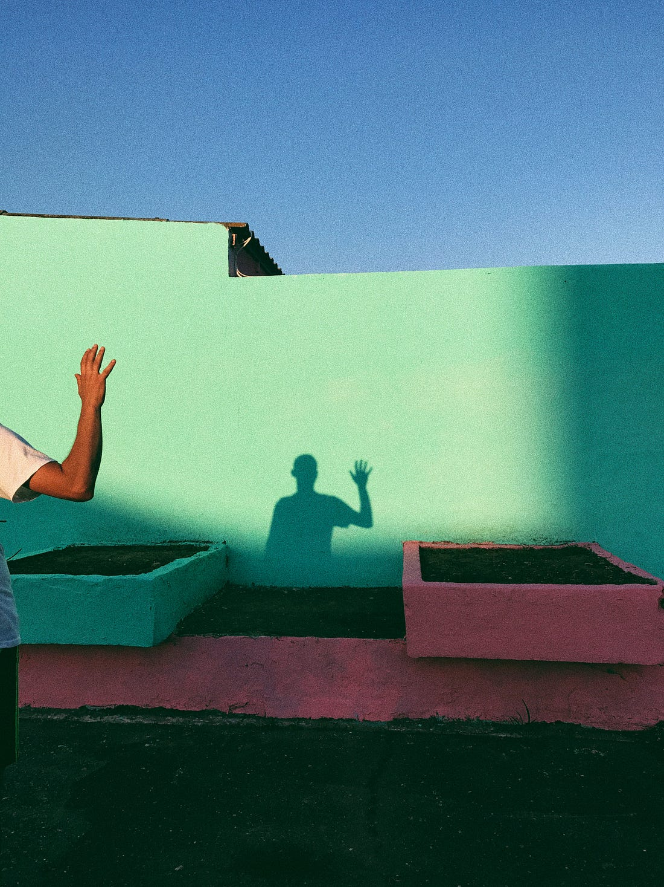
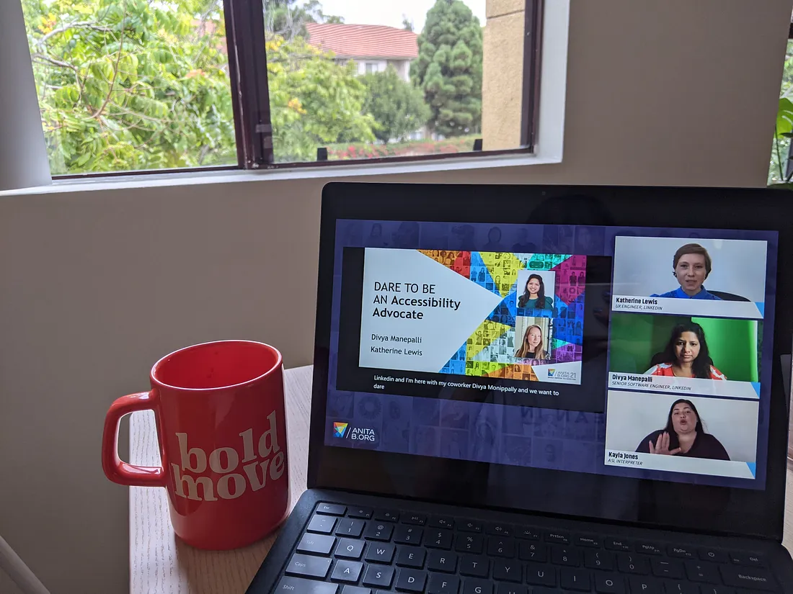
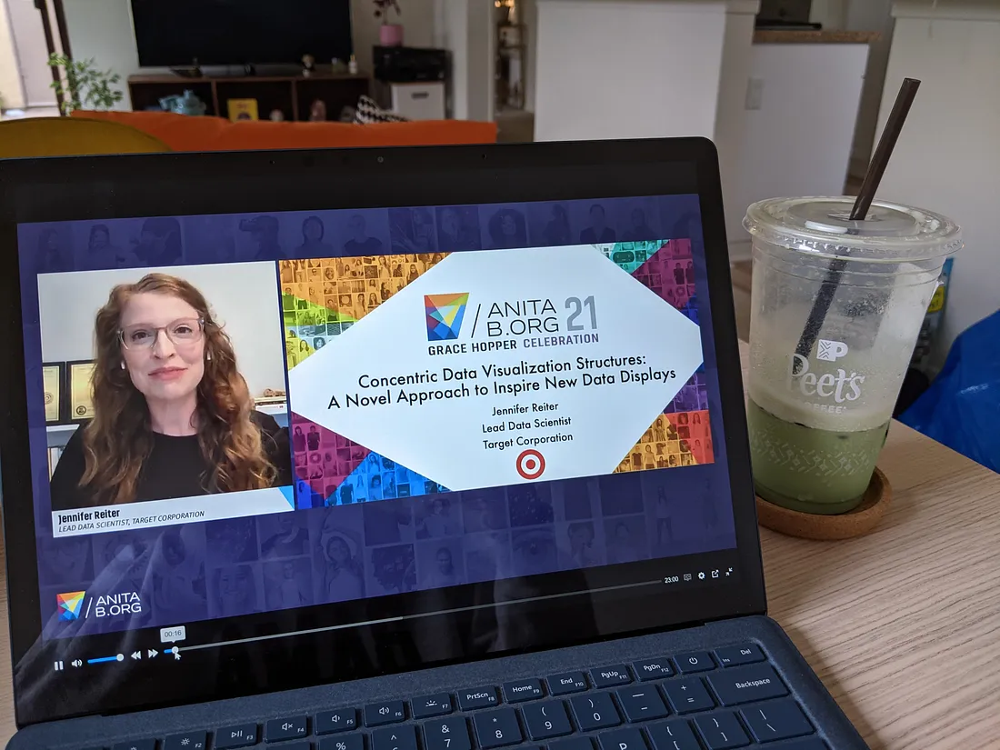
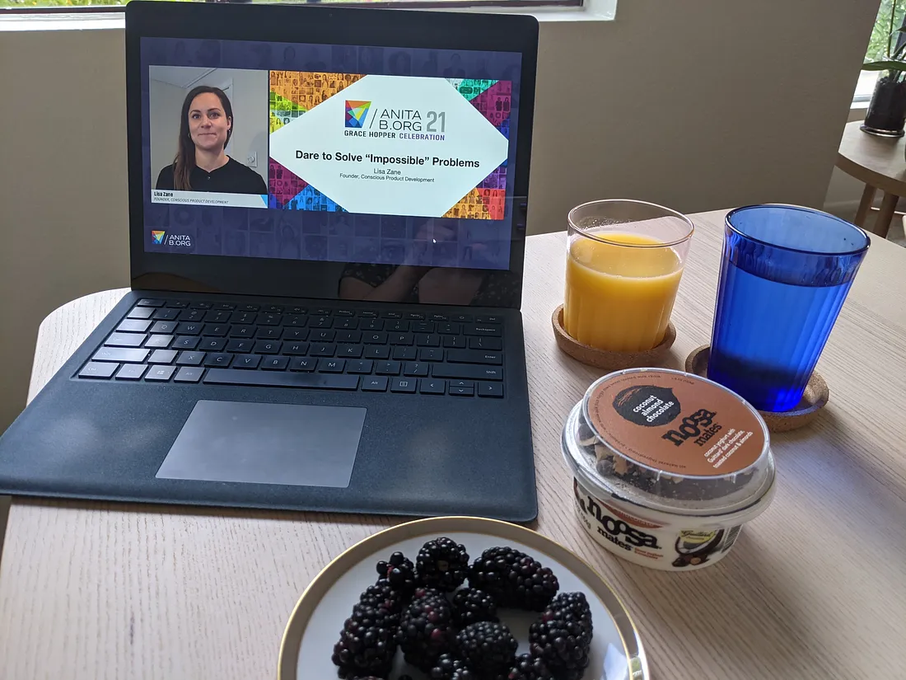
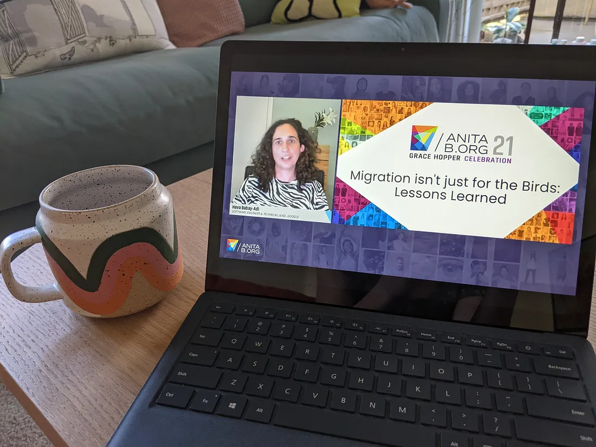
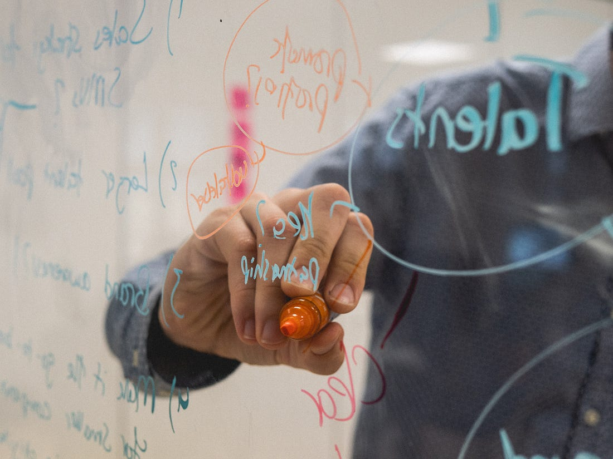
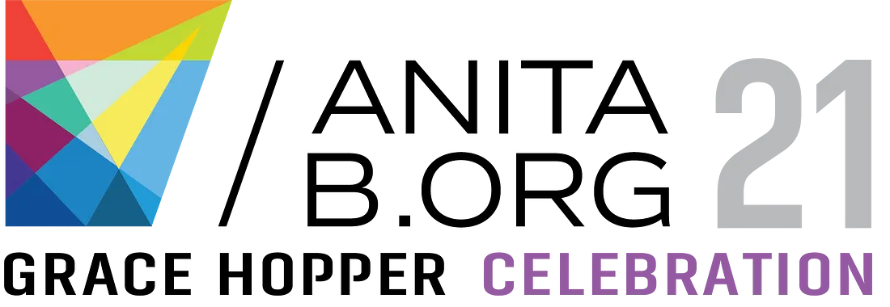

My vGHC 2021 Experience
October 8, 2021
Hello! My name is Grace Manning and I'm a 3rd-year student at UCI, majoring in Computer Science and minoring in Film & Media Studies. Since my freshman year, I've been involved in a club called Women in Information & Computer Sciences (WICS) at UCI. Being a part of WICS has changed my college experience and has opened my eyes to the many opportunities available to me in the tech & computer science world.

Photo by Ioana Cristiana on Unsplash.
Each year, Anita B.org holds an event called the Grace Hopper Celebration, which is a week-long
conference dedicated to women in computing. For the past two years, Grace Hopper Celebration has
been offered virtually due to the Covid-19 pandemic, hence the “v” in vGHC. I decided to attend
vGHC 2021 because I was really interested to see what it was like, especially after hearing lots
of great things about the event from my friends in WICS at UCI. This was my first time attending
GHC ever, so I came in with no expectations.
I had actually been traveling the week before vGHC began, so I felt like I was already behind in
my classes even though school had just started. For this reason, I took a less-involved approach
to vGHC so I could devote time throughout the week to catch up on classes. Thus, my main method
of participating in vGHC was via the Anita Borg On-Demand Studio. The plethora of videos
available in this on-demand library provided hours of content that I watched throughout the
week. I really loved this method of delivery because it allowed for more flexibility in my
schedule, which is one of the benefits of a virtual event!
As I perused the videos available online, I decided each day could have a theme. This type of
organization was a fun way to break up the content among different days. While all the videos
were great, this blog would be too long if I wrote about each one I watched. Therefore, I've
decided to write about my favorites that stuck out to me during the week.
Monday, Sept. 27 2021: Accessibility and Inclusivity
I spent today getting accustomed to Anita Borg On-Demand Studio. The first video that sparked my interest was about accessibility, so I decided to pick that as the theme for the day. I made myself a cup of coffee and got started!
My coffee mug + the first video I watched for vGHC! (Sept. 27 2021)
A11y Best Practices: How to Design, Build, and Test for Accessibility
I started with “A11y Best Practices: How to Design, Build, and Test for Accessibility” which
talked about “create accessible designs, configure accessibility testing workflows, and run
audits on your own website to ensure it is accessible.” The first thing I noticed when I started
the video was the presence of an ASL interpreter while the presenter spoke. I loved that the
creators of this video had the audience in mind, and made sure they used the same accessibility
techniques as were discussed throughout the presentation. I also learned a new term, a11y, which
is an abbreviation for accessibility because there are 11 letters between “a” and “y” in
that word.
The speakers were Katherine Lewis, a UX Engineer at LinkedIn, and Divya Manepalli, a Senior
Software Engineer at LinkedIn. Something I found interesting that Katherine spoke about was how
to create a website that can easily be read through a screen reader, such as using alt text to
ensure every non-text object has a text alternative. I also want to learn more about color
contrast, which is a property that can be improved to make websites more accessible for
low-vision audiences.
A great way to see if your website is accessible to blind or low-vision audiences is to test it
using a screen reader. This will let you know if the website makes sense when being read through
a screen reader, and is an important practice that I'd like to start using when creating
websites. Different screen readers are available depending on browsers and operating systems; I
would use one such as NVDA or JAWS, which are screen readers that are compatible with Chrome on
Windows systems. Divya, one of the presenters, showed a demo of a screen reader. It was
interesting to me that the screen reader will say out loud each letter that the user types,
unless the user is typing a password. This shows the importance of building a website properly
so the screen reader recognizes that the password is protected text rather than regular text.
Overall, I really enjoyed this presentation. I think it sparked my interest in learning more
about website accessibility and how I can improve my practices in the future to make websites
and applications more accessible.
A11y Best Practices: How to Design, Build, and Test for Accessibility
To continue with a theme of accessibility, I decided to watch “Creating an Accessible Virtual
World for Everyone” next. This presentation was given by Mariah Hart, a Technical Program
Manager on the AltspaceVR Team at Microsoft. Mariah opened her presentation with a verbal
description of herself, which is helpful to low-vision and blind audience members. What struck
me immediately was Mariah's statement that “differences are part of the human condition.” She
had adapted a quote from the World Health Organization by replacing the word “disability” with
“difference.” The reason for this, she explained, is so we can focus on the ability rather than
disabilities of people with differences.
Another really important point that Mariah discussed is that accessibility is not just a problem
for people with differences to worry about. Everyone should include accessibility in their
designs, products, and services. Personally, I want it to be something that I continuously
consider throughout my day.
In this presentation, I learned about the term Extended Reality (XR). This refers to
technologies that “extend reality and merge the physical and virtual worlds,” as Mariah
explained. XR includes virtual reality, augmented reality, and mixed reality. XR experiences can
allow people to overcome physical limitations. For example, someone with muscular dystrophy can
try out a surfing VR experience. There are currently some challenges to accessible XR
experiences, such as the money that is needed to purchase this equipment and pay for high-speed
internet.
Overall, I found this to be yet another interesting and educational presentation. I enjoyed
Mariah Hart's discussion about the different possibilities that XR can provide to people with
differences, as well as the many factors that should be taken into consideration when designing
this type of technology!
Tuesday, Sept. 28, 2021: Learning New Concepts
After grabbing an iced matcha latte from Peet's to get my morning started, I sat down and thought about my theme for the day. I noticed that there were lots of videos whose titles seemed like completely new concepts to me. Thus, today I focused on watching presentations about things I either didn't know much about or had never heard of before.
My matcha latte + the first video of the day. (Sept. 28 2021)
Concentric Data Visualization Structures: A Novel Approach to Inspire New Data Displays
The video that I started with today was about “concentric data visualization structures,” which
is a phrase I had never heard of before. The presentation was given by Jennifer Reiter, a Lead
Data Scientist at Target. As a data scientist, Jennifer works with data and has lots of
experience with creating visuals for a variety of audiences. She spoke about the benefits of
data visualization, including the science behind how our brains process visual information.
Due to a problem that her team needed to solve in regards to data visualization for business
partners, Jennifer created the concentric data visualization structures. This structure is a
system of rings that represent various data points. There are different ring types: percentage
rings, proportion rings, and count rings. Any combination of rings can be used to represent a
set of data with different properties in one visual.
Something I found incredibly useful during this presentation was Jennifer's breakdown of
Functional Programming vs. Object-Oriented Programming. Her codebase for the concentric data
visualization structure was originally written through a functional programming paradigm.
However, she eventually restructured her code to fit an object-oriented paradigm due to various
red flags in her code. This showed me the importance of re-evaluating code for potential
improvements. Overall, this was a really informative and neat presentation!
Compute-in-Memory: A New Approach to Machine Learning Accelerators and Challenges
The other video I wanted to highlight today is a presentation about machine learning from Rui
Li. I chose this video because I am completely unfamiliar with the technology behind machine
learning, and thought it'd be interesting to learn about new approaches to it. The presenter,
Rui Li, is a Hardware Engineer at SambaNova Systems.
To begin her presentation, Rui introduced the concept of compute-in-memory. She explained how
compute-in-memory leads to a type of computer architecture that is different from the typical
von Neumann structure. As the volume of data and information worldwide has significantly
increased over time, faster computing engines are becoming more important. The “communication
between memory and arithmetic unit,” as Rui states, is causing a bottleneck issue.
Rui's solution to this is to build a convolutional neural network in reRAM. This is a completely
new concept to me, so I didn't fully understand what was being discussed in the presentation.
However, this presentation opened my eyes to new possibilities in the machine learning industry
and showed me what types of things I could work on if I entered this field.
Wednesday, Sept. 29, 2021: Self Improvement & Empowerment
After fixing myself breakfast (water, orange juice, yogurt, & black berries), I scrolled through the On-Demand Studio to determine what types of videos I should watch today. I saw a few interesting ones that were related to self-improvement in regards to personal and professional life. Since I haven't watched videos like these yet, I picked self-improvement and empowerment as my theme for the day.
My breakfast and the first video of the day! (Sept. 29 2021)
Dare to Solve “Impossible” Problems
I began by watching “Dare to Solve 'Impossible' Problems,” presented by Lisa Zane. Lisa is the
founder of Conscious Product Development, and has worked in kinesiology, journalism, product
development, project management, and more. One of the first things she pointed out in her
presentation is that people often start solving a problem before clearly defining what the
problem actually is. “Often, we are asking the wrong questions,” Lisa says. This leads to
solving the wrong problems and creating products that are unnecessary or slow us down.
Lisa spoke about 8 factors she believes are crucial to solving “impossible problems.” They are:
1) Find the problem, 2) Frame the problem, 3) Establish a unique shared vision, 4) Light the way
(provide the team with guidelines), 5) Create an environment where everyone can be themselves,
6) Build a team that sees the world from many different perspectives, 7) Have a clear and
transparent decision-making framework, and 8) Ignite a shared belief.
This presentation was largely focused on how to be a good leader of a team. I did not expect
that going in, but it was very interesting! I think these skills can be applied in a lot of
different ways, whether I'm a project manager or not. Overall, this presentation was delivered
in an interesting way and covers a crucial topic that I can definitely take with me throughout
my career. 10/10, would recommend!
REACT to Imposter Syndrome
Since it's recruiting season, with internship and job applications being a constant topic of
discussion, I figured I might benefit from a presentation about imposter syndrome. Everyone
needs a healthy reminder that “YOU BELONG!” every once in a while. Thus, I watched “REACT to
Imposter Syndrome,” a presentation by Prakriti Mateti, who is an Engineering Manager at Zendesk.
She spoke about the REACT acronym, which are steps to overcome imposter syndrome. Record
successful outcomes & feedback. Evaluate imposter thoughts & question assumptions. Ask trusted
people for opinions. Challenge assumptions using data from previous steps. Transform the
imposter thought and save it.
Something I found really important is Prakriti's note that we need to learn how to distinguish
between useful feedback and our own assumptions about our performance. Sometimes it is important
to question yourself and check to see if you have room to improve. However, this is different
from inaccurate and untrue imposter thoughts that don't help you improve in any way. Prakriti's
presentation was great and gave me some action items I can utilize next time I feel affected by
imposter syndrome!
Thursday, Sept. 30, 2021: Industry Insight
As I browsed through the Anita Borg On-Demand Studio for today's selection of videos, I realized there were a lot that centered around experience and insight from the tech industry. Many speakers were presenting about topics I had not considered to be part of a software engineering role, so I settled on “Industry Insight” as today's topic.
First video of the day! Featuring my coffee mug. (Sept. 30 2021)
Migration isn't just for the Birds: Lessons Learned
I began my fourth day of vGHC with a presentation about handling software migrations. Based on
the description, this seemed like a topic that is important to be familiar with as a software
engineer. The speaker of this presentation was Hava Babay-Adi, a Software Engineer and Technical
Lead at Google. She spoke about the importance of migration projects, which are “essential for
keeping your code clean and healthy, and your systems resilient and long-living.”
Migration projects are something I have not considered in the past. They often involve major
architecture changes, and it is important that they happen without compromising the current
system.
An example that Hava provided was a migration project she worked on in which a front-end
codebase was moved from GWT to the Angular framework. She spoke about the importance of
maintaining data correctness, efficiency, usability, and more. The program also needed to be
migrated while remaining live and undergoing continued use.
Overall, this was a very informative presentation. Hava provided lessons she learned from
software migration, along with the steps she recommends taking in migration projects. I learned
that migrations are an opportunity to re-evaluate code to bring in new value, and user testing
is always important!
Baymax Dreams: Story and Design in Real-time
I selected this video about animation because I really loved Baymax in Big Hero 6… and I
couldn't resist a Disney presentation! The speakers were Jenn Burchfield, an Animation
Supervisor, and Megan Stifter, a Technical Art Director, both currently at Disney Television
Animation. They work on real-time animation technologies, and are working on interactive
storytelling. They spoke about bringing together artists and engineers to push the boundaries of
animation.
To overcome multiple challenges, Jenn and Megan described how their teams animate in a Game
Engine, which allows for prototyping and yields a collaborative environment. However, it creates
large binary files that have to be worked on simultaneously but can't have animators stepping on
each others' toes— they solved this issue using prefabs. Prefabs are containers for arbitrary
Game Object data.
This was an interesting topic to me because I love art, and I think it's important to consider
how we can merge art and technology to yield new and exciting creations. The need to animate in
real-time is a relatively new issue; as the animation tech industry grows, audiences can expect
to see faster rendering, interactive storytelling, and real-time animation to accompany these
changes.
Friday, Oct. 1, 2021: Various Live Desks & Keynotes
Since it's the last day of vGHC, I thought I would check out the various Live Desk / Keynote sessions available in the on-demand studio. They were all really interesting (no surprise there), but I've decided to highlight two that I found to be especially useful for me!
From Techno-Optimism to Techno-Realism: What It Means to Innovate Responsibly
I selected this presentation about responsible innovation because it's an important topic that everyone should consider if they're going into a role in tech! The speaker was Margaret Gould Stewart, the VP of Product Design & Responsible Innovation at Facebook.
Photo by Kvalifik on Unsplash.
Margaret's main point is that we need to consider challenges and things that could go wrong in
projects; this helps transition us from techno-optimism to techno-realism. These are crucial in
creating technology responsibly, and with the awareness that technology can massively impact
peoples' lives. Margaret's team at Facebook works with engineers in the early stages of product
design to ensure that their products have beneficial impacts, rather than contribute to societal
harm.
The steps that Margaret discussed, such as cultivating societal awareness, are things I'd like
to take with me as I go through my career and life. She also mentioned that technology may
unintentionally enforce societal norms that can be harmful. We should attempt to break societal
norms when designing technology in ways that work towards societal benefit. This is just one of
the many things I should take into consideration when creating or contributing to technology in
the future.
Disability is an Opportunity for Innovation
A common theme throughout vGHC has been the impactful discussions surrounding technology's
intersection with disability and accessibility. I have really enjoyed these presentations, which
leads me to consider how my future career in tech can impact this conversation. I continued to
think about this as I watched “Disability is an Opportunity for Innovation,” a presentation
given by Haben Girma, a Human Rights Lawyer and Author. Haben Girma is deaf and blind, and she
began the presentation by sharing her personal experiences with her disabilities and assistive
technology.
One of the many ways that people with disabilities have innovated is through language. Language
can be verbal, visual, and tactile. Communication techniques have been innovated due to the need
for new types of communication. Haben spoke about how dance is also a form of communication,
because she can feel the beat of music and emotion in the movement when dancing.
What I found really important is that disabled people should not be the only ones working to
remove barriers. Non-disabled people need to work on removing barriers to accessibility because
it will benefit all of us when everyone has the same opportunities available! I would like to
take this lesson with me throughout my life and career.

Final Thoughts
The virtual delivery of content at vGHC 2021 worked out well for me and my busy schedule. While
I did not participate in any live events, that's okay! I still learned a lot and I'm leaving
this experience feeling motivated to finish personal projects and work hard in my classes.
I think if I attended in-person GHC, I would love to attend live sessions and interact a lot
more with people. When it comes to virtual events, I tend to step back and do things on my own
time. Thus, I hope that GHC can be held in person for 2022!
One great aspect of this event was that the presentations I watched were held by speakers of big
and small companies. Some were from Google and Microsoft, while others were founders of their
own businesses that I hadn't heard of before. I am coming away with new knowledge of the
industry, plus new ideas about the job possibilities that are available to me! That is exactly
what I wanted when I decided to register for vGHC. This was a great experience and I'd recommend
it to any woman in tech!